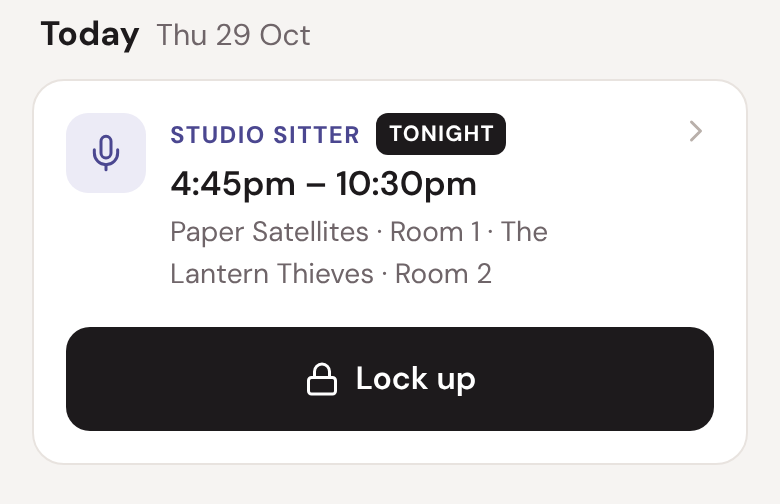
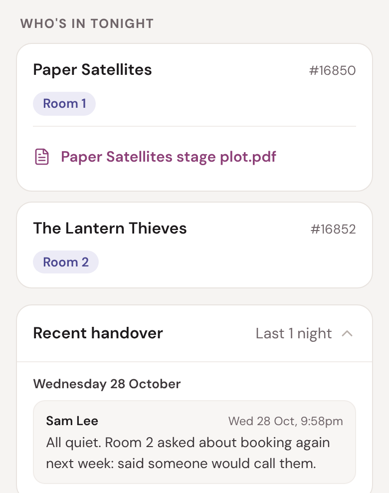
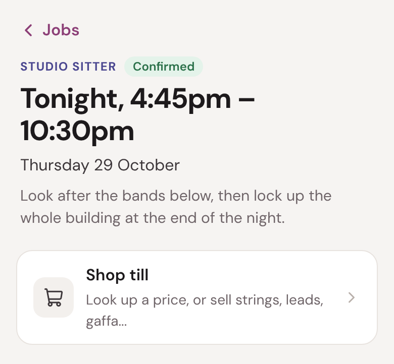
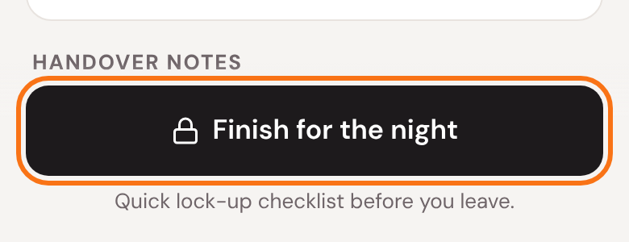
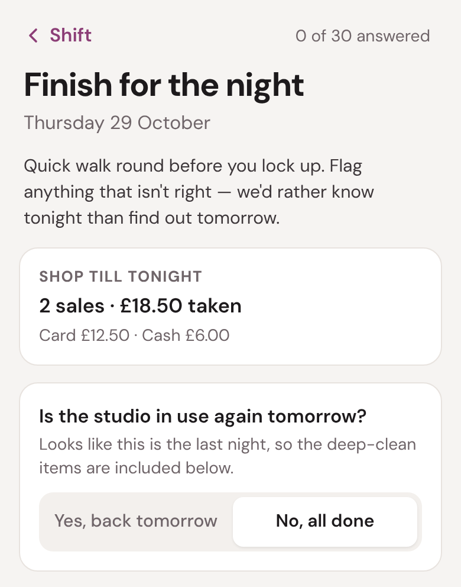
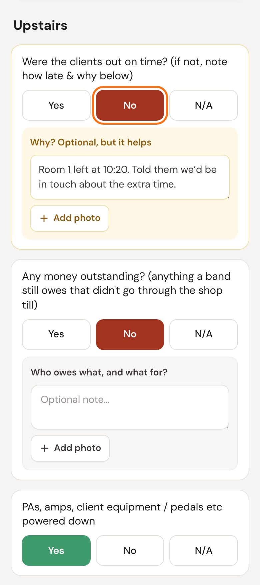
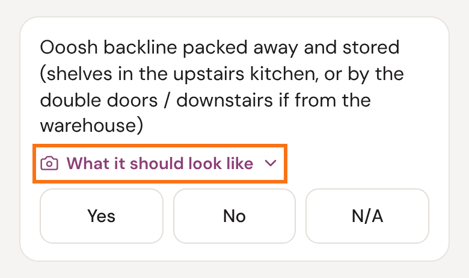
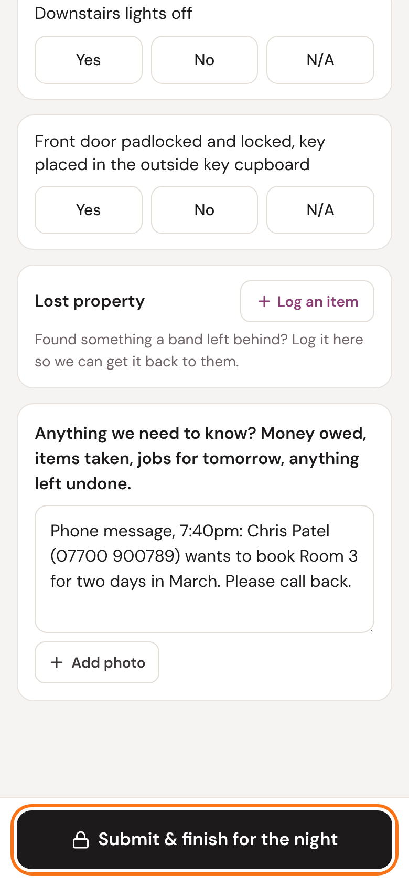
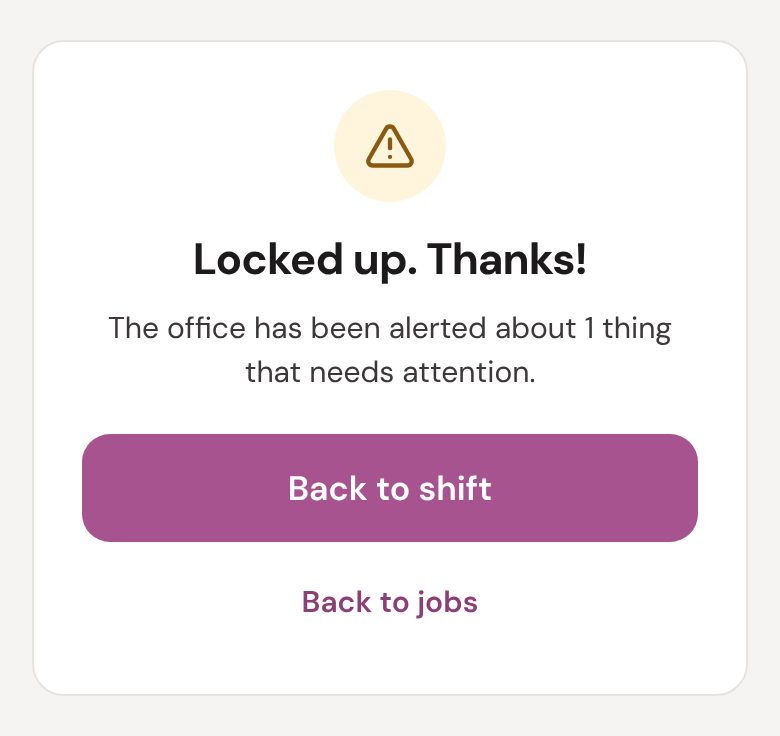

Studio sitting
Looking after the rehearsal studios for an evening
As a studio sitter you look after the bands rehearsing with us, serve the shop till, answer the phone, and lock the building up at the end of the night.
Unless we tell you otherwise, a shift is 4.45pm to 10.30pm.
Five things to remember
- Stay on site for the whole shift, ideally at the front desk.
- Bands are packed up and out by 10pm.
- Answer the phone and take a message.
- Lock the front door while you clean up upstairs.
- Fill in the lock-up checklist every night before you leave.
1
Arriving
Ooosh staff usually leave around 5pm, so we'll do a quick handover with you when you arrive.
If we've told you nobody will be here, the keys are in the lockbox in the grey cupboard outside. Call us for the code. The keys go back in there at the end of the night.
Your evening is on the Jobs page of the portal. Tap it to open your shift page.

2
Your shift page
Who's in tonight lists each band and their room, with any stage plots or specs. Recent handover shows what the last sitters left for you.

Handover notes, further down, are for the next sitter or the office.
3
During the evening
Please stay on site for the whole shift, ideally at the front desk, so bands can find you if they need anything.
Your job is to help the bands during their sessions, serve the shop till, and lock the building up at the end of the night.
House rules for bands
- No smoking anywhere in the building. Smoking is outside.
- Doors closed whenever they're playing. If a room sounds louder than usual, someone's probably left a door open.
- Guests are fine, but this is a rehearsal studio, not a party room.
- Keep the noise down when they leave.
A problem with our backline? Put a message in the WhatsApp group and an Ooosher will pick it up and help you.
4
The shop till
Bands can buy strings, leads, gaffa and so on. Tap Shop till on your shift page.

The How to use the shop till guide, in Resources, has the rest: cash, cards, and putting it on a band's bill.
5
The phone
Please answer the phone while you're here. Most of the time you'll just need to take a message. Get as much detail as you can:
- their name
- what it's about
- a phone number or email
Write it down straight away, then put it in the notes at the end of your lock-up checklist.
A vehicle emergency (a customer with one of our vans): give them our emergency line, 0330 123 1360.
A backline emergency: put a message in the WhatsApp group and an Ooosher will pick it up.
6
10pm: time to go
Sessions finish at 10pm unless we tell you otherwise. That means packed up and out of the building by 10pm, not playing the last song at 10pm and then packing down.
Knock on the door 15 to 20 minutes before to give them a heads-up.
We strongly discourage running over. If a band wants a little longer, it's your call: say no if you need to get off. If you say yes, tell them it will be chargeable, and we'll follow up with them the next day to settle the difference. Note it in your lock-up checklist.
Ask them to keep the noise down as they leave.
7
Closing up
When the bands have gone, lock the front door for your own safety while you clean and restock upstairs.
Then get everything ready for the next day. Where things live:
| Toilet rolls | Spares in the downstairs toilet |
| Cups | Downstairs kitchen cupboards |
| Tea bags | Downstairs kitchen |
| Coffee beans | In the black bucket by the downstairs coffee machine, to top up the machines |
| Bin bags | Under the sink in the Room 2 kitchen, or in the downstairs kitchen |
| Dishwasher | Downstairs kitchen, for the dirty crockery. Tablets are under the sink. |
| Vacuum cleaner | Room 2 kitchen |
| The lift | Turn it off with the small silver key in the grey cupboard outside. Leave the key in. |
| First aid kits | One in every room upstairs |
8
The lock-up checklist
Fill it in every night before you leave. It's there to remind you of everything as much as to tell us, so take it round with you.
Tap Finish for the night at the bottom of your shift page (or Lock up on the Jobs page).


Is the studio in use again tomorrow?
It works this out from the bookings. On the last night of a booking (No, all done) it adds the deep-clean items: vacuuming, packing the hired kit away, and so on. Change it if it's wrong.
Answer each item
Tap Yes, No or N/A. If something isn't right, it asks Why? Say what happened. A photo helps.

What it should look like
Some items have photos of how things should be left. Tap What it should look like to see them.

Lost property
Found something a band left behind? Tap Log an item, say what it is and where you found it, and we'll get it back to them.
Notes, then Submit
Use Anything we need to know? for phone messages, money owed, and anything left undone.

Then tap Submit & finish for the night. Missed an item? It tells you, and you can tap again to submit anyway.
9
Done

The office gets your checklist straight away, and anything you flagged.
Put the keys back in the lockbox in the grey cupboard if that's where they came from, and you're done. Thank you!
Forgot the checklist? We'll email you a reminder the next morning. You can still fill it in then.
?
If something's not right
- Someone is hurt, or you feel in danger.
- Call 999. Then let us know. There's a first aid kit in every room upstairs.
- A customer has a problem with one of our vans.
- Give them our emergency line: 0330 123 1360.
- Something's wrong with our backline.
- Put a message in the WhatsApp group. An Ooosher will pick it up.
- Anything else.
- Call or message one of us at Ooosh: you have our numbers.
The office: 01273 911382 · info@oooshtours.co.uk